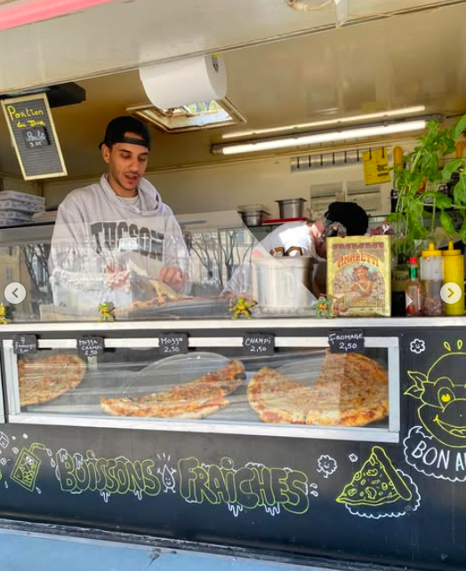

Notre histoire
Pizz’art est né autour d’une passion simple : proposer une pizza généreuse, bien travaillée, servie dans une ambiance chaleureuse et professionnelle.
Plus qu’un service de restauration, le camion apporte une vraie présence sur un événement : l’odeur, le four, l’échange avec les invités et l’image d’un concept artisanal fort.